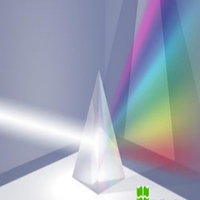
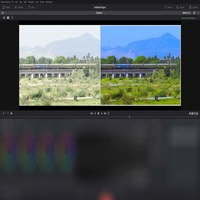

Introducción
-
Distribución
Celuloide
El método tradicional de distribución requiere grandes sumas de dinero para que la película final pueda llegar a cientos de salas de proyección, que al fin y al cabo en uno de los pasos finales para que una película dé beneficios económicos
-

Distribución
Visión de futuro
Si el método de distribución tradicional cambia en el futuro hacia un producto de accesibilidad más directa, entonces los realizadores digitales serán capaces de superar los actuales obstáculos de la distribución tradicional del celuloide
-

Fotoquímica
¿Qué es?
La fotoquímica es el arte y la técnica de obtener imágenes duraderas debidas a la acción de la luz. El formato más popular de la película es el 35mm que también se conoce como película 135, utilizada en la mayoría de cámaras analógicas réflex y compactas hasta el final del siglo XX
-
Fotoquímicos
Digitalización
El celuloide está siendo sustituido cada vez más rápido. Incluso en las producciones que utilizan el fotoquímico, la postproducción es digital ya en la gran mayoría de los casos, dando lugar a procesos englobados bajo el término Digital Intermediate
-

Digital Intermediate
Utilidad
Facilitan la generalización del uso de VFX y aumentando en consecuencia el volumen de información digital para la gestión de la imagen cinematográfica